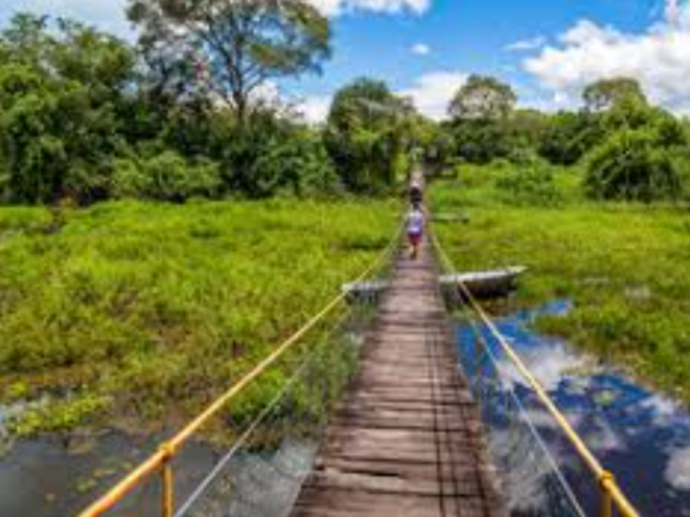

Mato Grosso do Sul é conhecido pelas paisagens naturais e pelo Pantanal, uma das regiões com maior biodiversidade do mundo. Sua capital é Campo Grande. O estado possui economia voltada para a pecuária, agricultura e turismo ecológico, atraindo visitantes interessados na natureza e na observação de animais.
